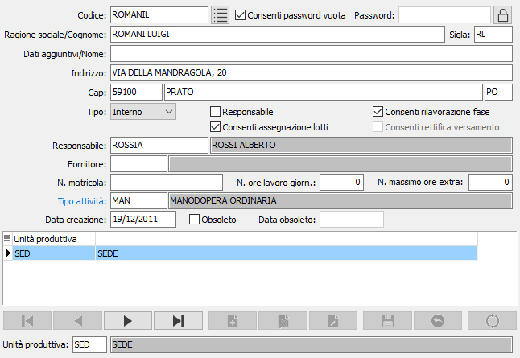
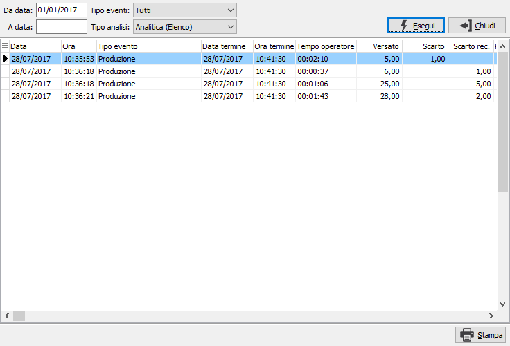

Operatori
Gli operatori sono gli addetti alle risorse che si occupano delle attività bordo macchina. Tramite i pulsanti presenti nella Toolbar sarà possibile effettuare la stampa sia di un elenco che delle etichette riportanti il codice a barre della matricola, eventualmente utilizzabili per l'accesso all'applicazione OS1BMJob.

Per ciascun operatore può essere definita, oltre i dati cosiddetti anagrafici
ed i tempi di lavoro, l’unità produttiva di appartenenza; nel caso l'operatore
sia definito Esterno, tramite l'apposita casella, sarà necessario inserire
un codice fornitore di riferimento; è possibile assegnare all'operatore
la caratteristica di responsabile e consentire le rettifiche, le rilavorazioni
e l'assegnazione dei lotti (validi per OS1BMJob) spuntando le relative
caselle. La password operatore viene utilizzata per l'accesso ad OS1BMJob
e può essere inserita o variata solo da quell'applicazione, è comunque
possibile consentire una password vuota che evita la richiesta della password
su OS1BMJob oppure eliminarla con il pulsante
Se l'operatore utilizza l'applicazione OS1BMJob è necessario assegnare l'unità produttiva su cui è autorizzato ad operare; operazione che si effettua dalla sezione in basso della finestra quando si è in modifica dell'operatore stesso.
Se l'operatore utilizza l'applicazione OS1BMJob è possibile indicare un responsabile, che deve essere un operatore con caratteristica di responsabile, che se indicato avrà la possibilità di inserire rettifiche al posto dell'operatore di cui è responsabile.
Se è gestito in configurazione il costo operatori per fascia oraria sarà presente il campo "Tipo attività" che consente di assegnare all'operatore la tipologia di attività con cui effettuare il calcolo del costo orario.
 Il pulsante Analisi eventi consente di interrogare
gli eventi che derivano dall'applicazione OS1BMJob; la consultazione è
simile all'analisi eventi.
Il pulsante Analisi eventi consente di interrogare
gli eventi che derivano dall'applicazione OS1BMJob; la consultazione è
simile all'analisi eventi.
